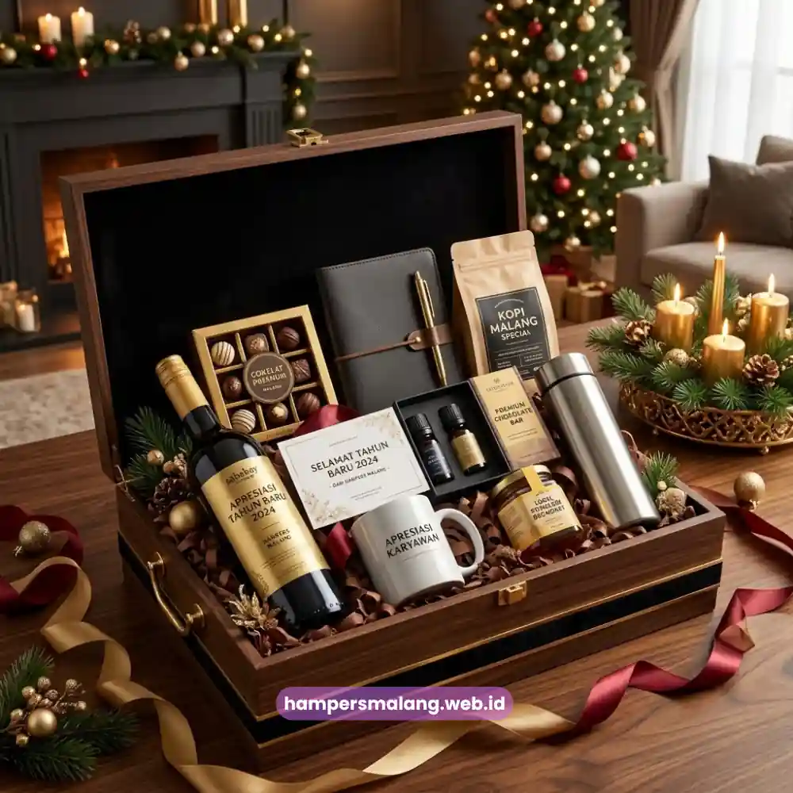
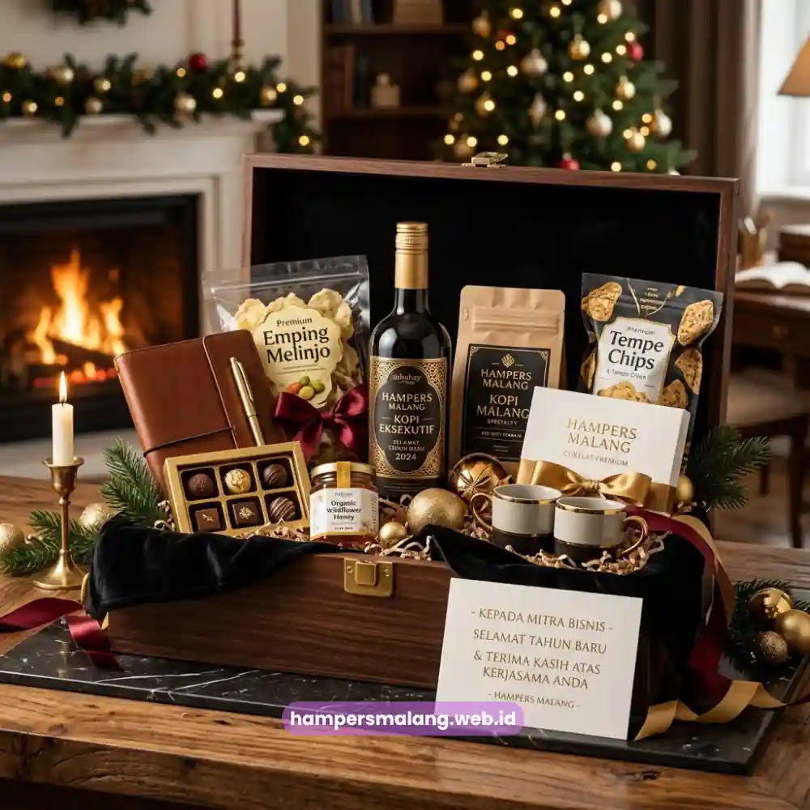

Isi hampers tahun baru perusahaan sebaiknya disesuaikan dengan siapa penerimanya, karena kebutuhan dan ekspektasi klien berbeda dengan karyawan internal.
Klien cenderung lebih menghargai kesan eksklusif dan formal, sementara karyawan lebih merasakan kehangatan lewat isi yang personal dan fungsional.
Menyamaratakan isi hampers untuk kedua kelompok ini justru dapat mengurangi dampak apresiasi yang ingin disampaikan.
Banyak perusahaan masih menyusun hampers dengan pendekatan satu ukuran untuk semua, padahal penyesuaian isi berdasarkan profil penerima terbukti memberikan kesan yang jauh lebih bermakna.
Artikel ini akan mengupas secara spesifik bagaimana menyusun kombinasi isi hampers yang tepat, baik untuk klien maupun karyawan, tanpa mengulang pembahasan umum yang sudah dibahas sebelumnya.
Mengapa Isi Hampers Perlu Dibedakan antara Klien dan Karyawan?
Perbedaan isi hampers antara klien dan karyawan diperlukan karena posisi dan hubungan mereka dengan perusahaan memiliki konteks yang berbeda.
Klien adalah pihak eksternal yang berperan dalam kelangsungan bisnis melalui kerja sama komersial, sehingga hampers untuk mereka perlu menonjolkan kesan profesional dan eksklusif yang mencerminkan penghargaan atas kepercayaan bisnis.
Sementara itu, karyawan adalah bagian internal yang berkontribusi langsung terhadap operasional perusahaan sepanjang tahun.
Hampers untuk karyawan idealnya membawa nuansa yang lebih hangat dan personal, karena tujuannya adalah memperkuat rasa memiliki dan motivasi kerja, bukan semata membangun citra ke pihak luar.
Dengan membedakan pendekatan ini, perusahaan dapat mengalokasikan anggaran secara lebih efisien sekaligus memastikan pesan apresiasi tersampaikan dengan tepat sasaran kepada masing-masing kelompok penerima.
Baca Juga: Ide Hampers Tahun Baru Perusahaan yang Paling Dicari
Ide Isi Hampers Tahun Baru untuk Klien dan Mitra Bisnis
Isi hampers untuk klien sebaiknya berorientasi pada kesan premium yang mencerminkan level hubungan bisnis yang telah terjalin.
Kombinasi yang umum dipilih perusahaan meliputi produk makanan dan minuman kelas atas yang dikemas secara elegan, dipadukan dengan elemen branding yang halus namun jelas terlihat.
Kombinasi Makanan dan Minuman Kelas Premium
Cokelat premium impor, kopi specialty, atau teh pilihan sering menjadi komponen utama hampers klien karena dianggap universal dan mampu memberikan kesan mewah tanpa terasa berlebihan.
Kombinasi ini juga relatif aman dari sisi preferensi personal, mengingat klien korporat berasal dari berbagai latar belakang.

Kartu Ucapan Formal dengan Sentuhan Personal
Kartu ucapan untuk klien sebaiknya ditulis dengan bahasa yang profesional namun tetap hangat, menyebutkan apresiasi atas kerja sama yang telah berjalan sepanjang tahun.
Detail kecil seperti ini sering kali menjadi elemen yang paling diingat oleh penerima dibandingkan isi hampers itu sendiri.
Kemasan Eksklusif sebagai Representasi Nilai Kerja Sama
Kemasan untuk hampers klien umumnya menggunakan material yang lebih premium, seperti kotak kayu atau box dengan finishing khusus, untuk menegaskan bahwa hubungan bisnis dengan klien tersebut memiliki nilai penting bagi perusahaan.
Ide Isi Hampers Tahun Baru untuk Karyawan Internal
Isi hampers untuk karyawan idealnya menekankan aspek kehangatan dan kegunaan sehari-hari, mengingat tujuan utamanya adalah memperkuat hubungan emosional antara karyawan dengan perusahaan.
Pendekatan ini berbeda dari hampers klien yang lebih menonjolkan kesan formal.
Camilan dan Minuman yang Dapat Dinikmati Bersama Keluarga
Berbeda dengan hampers klien yang bersifat individual, hampers karyawan sering dirancang agar dapat dinikmati bersama keluarga di rumah, seperti aneka camilan, kue kering, atau produk olahan yang cocok disantap saat momen pergantian tahun bersama orang terdekat.
Item Fungsional untuk Mendukung Produktivitas
Beberapa perusahaan menyertakan barang fungsional seperti tumbler, notebook, atau alat tulis berkualitas dalam hampers karyawan.
Barang-barang ini memberikan nilai tambah karena dapat digunakan dalam aktivitas kerja maupun pribadi setelah momen pemberian berlalu.
Pesan Apresiasi yang Personal dari Manajemen
Menyertakan pesan singkat dari pimpinan perusahaan yang mengapresiasi kontribusi karyawan sepanjang tahun dapat meningkatkan dampak emosional hampers secara signifikan, bahkan lebih besar dibandingkan nilai material dari isi hampers itu sendiri.
Berdasarkan pengamatan pada tren hadiah korporat, perusahaan yang menyesuaikan isi hampers dengan segmen penerima cenderung mendapatkan respons apresiasi yang lebih tinggi dibandingkan yang menggunakan isi seragam untuk seluruh penerima, terutama pada periode akhir tahun ketika volume pemberian hadiah meningkat signifikan.
Bagaimana Menyeimbangkan Kualitas Isi dengan Anggaran Perusahaan?
Menyeimbangkan kualitas isi hampers dengan anggaran dapat dilakukan dengan menentukan prioritas item utama terlebih dahulu, kemudian menyesuaikan jumlah dan variasi tambahan berdasarkan sisa anggaran yang tersedia.
Untuk klien, prioritaskan satu atau dua item premium sebagai centerpiece, dibandingkan banyak item dengan kualitas menengah.
Untuk karyawan dalam jumlah besar, pendekatan yang lebih efisien adalah memilih kombinasi item yang tetap terasa istimewa namun dapat diproduksi secara konsisten dalam skala besar tanpa mengorbankan kualitas.
Konsultasi dengan tim penyedia hampers dapat membantu menentukan komposisi yang optimal sesuai anggaran yang dimiliki perusahaan.
Tim Hampers Malang dapat membantu menyusun kombinasi isi hampers yang sesuai dengan segmentasi penerima Anda, baik untuk klien maupun karyawan, dengan tetap memperhatikan efisiensi anggaran perusahaan.
Menyusun isi hampers tahun baru yang tepat untuk klien dan karyawan memerlukan pemahaman terhadap perbedaan konteks hubungan masing-masing penerima.
Klien membutuhkan kesan eksklusif dan formal, sementara karyawan lebih menghargai kehangatan dan kegunaan personal.
Penyesuaian ini akan membuat hampers Anda terasa lebih bermakna dan tepat sasaran.
Jangan biarkan momen apresiasi akhir tahun Anda terasa generik.
Percayakan penyusunan isi hampers tahun baru perusahaan kepada Hampers Malang, dan biarkan tim kami membantu merancang kombinasi terbaik untuk klien maupun karyawan Anda.
Hubungi kami sekarang untuk konsultasi gratis.
Tanya Jawab Seputar Isi Hampers Tahun Baru Perusahaan
Sebaiknya berbeda, karena klien dan karyawan memiliki konteks hubungan yang berbeda dengan perusahaan sehingga membutuhkan pendekatan isi hampers yang disesuaikan.
Kombinasi camilan yang dapat dinikmati bersama keluarga serta item fungsional seperti alat tulis atau tumbler menjadi pilihan yang umum untuk hampers karyawan.
Umumnya ya, karena kemasan yang lebih eksklusif membantu menegaskan nilai penting hubungan bisnis dengan klien tersebut di mata perusahaan.

Butuh Hampers Perusahaan?
Solusi Hampers & Corporate Gift Kreatif di Jawa Timur.
Ditulis oleh Tim Maroon Souvenir
Sahabat mahasiswa dan pelaku bisnis di Malang Raya. Berpengalaman menangani merchandise event kampus, instansi pemerintahan, dan hotel berbintang di Batu.